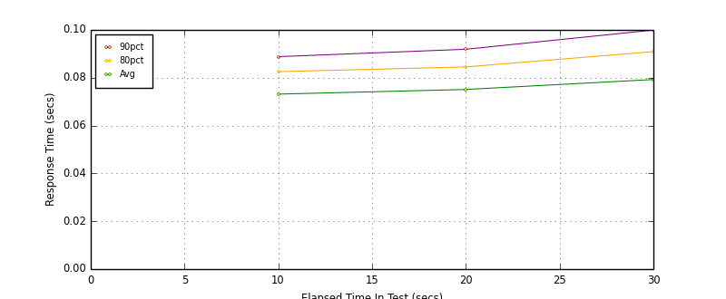
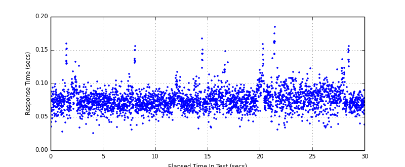
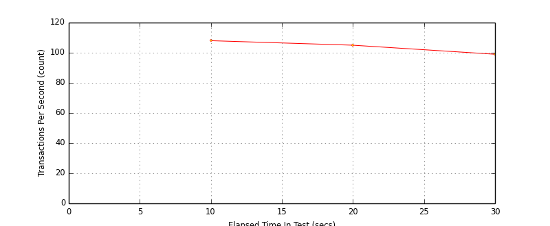
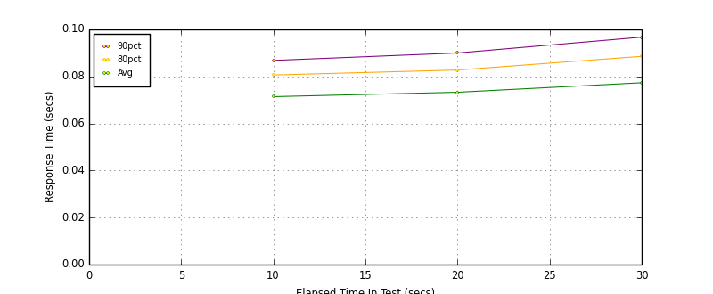
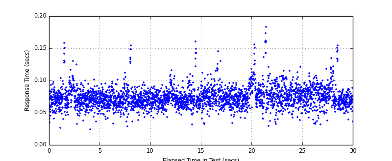

Performance Results Report
Summary
transactions: 3138
errors: 0
run time: 30 secs
rampup: 0 secs
test start: 2014-03-09 16:25:46
test finish: 2014-03-09 16:26:16
time-series interval: 10 secs
workload configuration:
| group name | threads | script name |
|---|
| user_group-1 | 8 | v_user.py |
All Transactions
Transaction Response Summary (secs)
| count | min | avg | 80pct | 90pct | 95pct | max | stdev |
|---|
| 3138 | 0.026 | 0.076 | 0.086 | 0.094 | 0.103 | 0.185 | 0.016 |
Interval Details (secs)
| interval | count | rate | min | avg | 80pct | 90pct | 95pct | max | stdev |
|---|
| 1 | 1081 | 108.10 | 0.026 | 0.073 | 0.083 | 0.089 | 0.096 | 0.160 | 0.015 |
| 2 | 1055 | 105.50 | 0.033 | 0.075 | 0.085 | 0.092 | 0.099 | 0.167 | 0.015 |
| 3 | 994 | 99.40 | 0.031 | 0.079 | 0.091 | 0.100 | 0.109 | 0.185 | 0.019 |
Graphs
Response Time: 10 sec time-series

Response Time: raw data (all points)

Throughput: 5 sec time-series

Custom Timer: Example_Timer
Timer Summary (secs)
| count | min | avg | 80pct | 90pct | 95pct | max | stdev |
|---|
| 3130 | 0.025 | 0.074 | 0.084 | 0.092 | 0.100 | 0.183 | 0.016 |
Interval Details (secs)
| interval | count | rate | min | avg | 80pct | 90pct | 95pct | max | stdev |
|---|
| 1 | 1081 | 108.10 | 0.025 | 0.071 | 0.081 | 0.087 | 0.094 | 0.158 | 0.015 |
| 2 | 1055 | 105.50 | 0.032 | 0.073 | 0.083 | 0.090 | 0.097 | 0.161 | 0.014 |
| 3 | 994 | 99.40 | 0.030 | 0.077 | 0.089 | 0.097 | 0.107 | 0.183 | 0.019 |
Graphs
Response Time: 10 sec time-series

Response Time: raw data (all points)

Throughput: 10 sec time-series